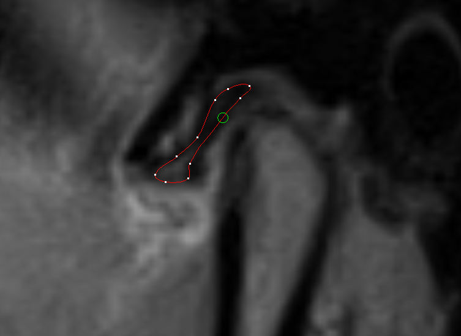
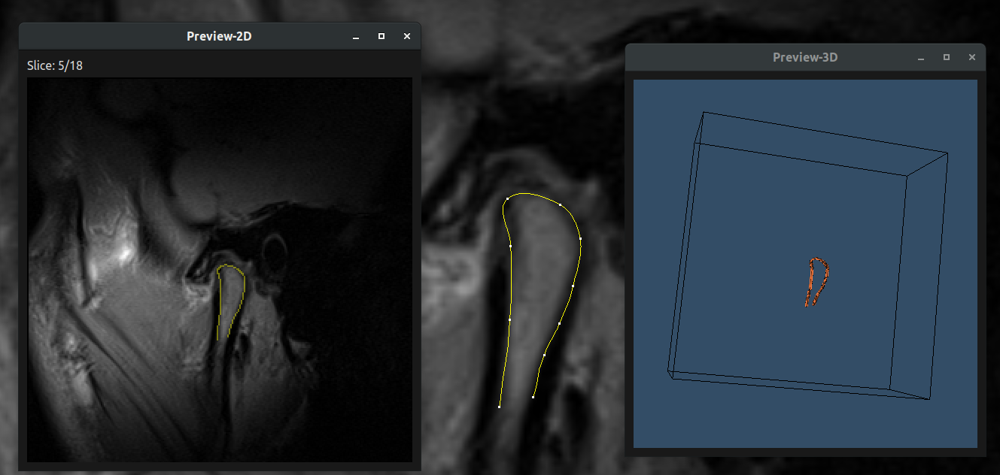

Operation Panel: Main labeling operations can be accessed here
Labeling Panel: Shows image and allows labeling
Console: Where program output shows
In the following part of this tutorial, panel.1-4 will be used to represent these interface panels.
牙齿标注
打开图像
go to panel.1 -> File -> Open and choose the directory to open.
The directory to be opened can contain multiple patient images and should be structed as follows:
Navigation operation includes roaming between patients, slices and different image series of single patient, they are all in the upper part of panel.2.
Operations are also binded with mouse buttons:
Move image - Right button pressd and move
Change slices - Wheel rolling
Zoom in/out - Ctrl + Wheel rolling
Change contrast/brightness - Middle button pressed and move
Initiate labeling - left button pressed and move
Navigation shortcut can be found in panel.1 -> Operations.
Note that during labeling process, image series can't be changed, so be sure that we are in the right image series before labeling,
In this project we will be using "SEG PD".
进行标记

Labeling interface, with point selected by hoveing cursor.
Avaliable labels can be found in panel.1.
To start labeling, drawing on panel.4 with left mouse button pressed, and the curve will be initiated when button is released.
We have following ways to adjust the control points on the curve:
Move - Move control point with left mouse button
Add - To create a control point, simply click and drag in the middle of the curve
Delete - To delete a control point, use mouse to hover above the control point and press Backspace/Delete.
No manual saving is needed after labeling each slice, it will save automatically when initiating the curve or when changes are made to the curve.
So feel free to change slices or labels after drawing the curve.
In some circumstances, we may need multiply contours to label the object (i.e. the object is split), in this situation, use the "Add another contour"
button in panel.2 to enable again contour initialization after one contour has been drawn.
To faciliate the labeling process, we can copy contour from previous slice as the contour initilization by pressing "Interp" button
in panel.2
预览

Preview window
After labeling all the slices we may want to have a check and probably make some revisions before exporting the result, it can be achieved by preview.
Both 2D and 3D previews are provided. (本项目不需要3D预览，图片大小不同时无法进行3D预览)
Click on Preview button of panel.2 to open 2D preview window.
We can go back and forth between slices with mouse wheel in 2D preview window and make changes in panel.4 with 2D preview window opened,
the changes will be updated in realtime to the preview window. (Note that the image in 2D preview window can't be magnified)
3D preview can be found in panel.1 -> View -> 3D Preview.
In the 3D preview window, we can zoom with mouse wheel, move the object with middle mouse button clicked and rotate with left button.
导出
To export labels, click on "Save" button on panel.2, the exporting process will be started,
destination and progress can be checked at panel.3
The exporting should be done for each patient.
And the output will be saved in a folder named"Label-<Labeler's name>-<File name>"
载入和修改
Sometimes we may want to revise our labels after we have exported.
To do so, go to panel.1 -> Files -> Load and open the folder we have exported, then we can do the revision.
Please note that for revison, we can't load multiple patient at the same time, and we will lost all the data loaded in the current window.
高级设置
Configuration files can be changed to modify the behavior of this program, they are in "config.json"
Author(s):Mengxun Li Email:mengxunli@whu.edu.cn | mengxun1@ualberta.ca Credit(s):
Dr. Kumaradevan Punithakumar
Dr. Abhilash Hareendranathan